Warning: package 'readr' was built under R version 4.1.3Warning: package 'dplyr' was built under R version 4.1.3Nosotros estamos interesados en saber el grado de satisfacción que presentan los alumnos y personal de UTEC frente al cambio de concesionario del comedor principal ubicado en piso 2 de la universidad.
En el segundo piso de UTEC se encuentra el comedor, espacio en el que hay una concesionaria encargada de vender almuerzos a alumnos y personal de la universidad, aprovechando la conveniencia de ubicarse dentro de esta. Este servicio es de gran importancia, pues es la principal fuente de alimentación de muchos alumnos de la universidad.
Este estudio fue realizado principalmente por la motivación de querer conocer la opinión de los usuarios sobre la cafetería en UTEC. Para profundizar el análisis, se ha decidido recolectar igualmente datos adicionales a la opinión, e igualmente se han recolectado datos sobre la concesionaria del ciclo previo (2022-2).
Nuestros datos son accesibles debido que son los alumnos de 2do ciclo en adelante, profesores y en general todos los demás consumidores del comedor y obtendríamos nuestras observaciones realizando una encuesta usando la herramienta de Google Forms.
Opinión sobre Calidad (Categórica)
Opinión sobre Cantidad (Categórica)
Opinión sobre Precio (Categórica)
Que tipo de menú consume mas (Categórica)
Rol en la universidad (Categórica)
Eficiencia en el servicio (Categórica)
Carrera (Categórica)
Ciclo (Numérica)
Frecuencia de consumo semanal (Numérica)
Presupuesto disponible semanal (Numérica)
Tiempo de espera (Numérico)
Tiempo diario aproximado disponible para almorzar (Numérico)
¿Cuantas veces usas el comedor a la semana?
¿Cual es tu opinión sobre la calidad?
¿Entre que rango de valores se ubica su gasto semanal?
¿Consume en la cafetería ?
rol: Variable categórica que describe el rol del participante en la universidad. Puede ser ‘Alumno’ o ‘’Personal’.
carrera: Variable categórica que describe la carrera que llevan los participantes de rol ‘Alumno’.
ciclo: Variable numérica que indica el ciclo que cursan los participantes de rol ‘Alumno’.
consume_actualmente: Variable categórica que indica si el participante consume o no de manera regular en la concesionaria del ciclo 2023-1.
consumo_semanal_actual: Variable numérica que indica el número de días a la semana que el participante consume en la concesionaria del ciclo 2023-1.
presupuesto: Variable numérica que indica el presupuesto semanal para gastar en alimentación del participante.
tiempo_espera: Variable numérica que describe el tiempo en minutos que el participante espera para poder consumir en la cafetería.
tiempo_disponible: Variable numérica que describe el tiempo en minutos con el que el participante cuenta para almorzar.
calidad_actual: Variable categórica que va de ‘Terrible’ a ‘Muy Bien’, la cual describe la opinión sobre la calidad de la comida en la concesionaria del ciclo 2023-1.
cantidad_actual: Variable categórica que va de ‘Terrible’ a ‘Muy Bien’, la cual describe la opinión sobre la cantidad de comida en la concesionaria del ciclo 2023-1.
precio_actual: Variable categórica que va de ‘Terrible’ a ‘Muy Bien’, la cual describe la opinión sobre el precio de la comida en la concesionaria del ciclo 2023-1.
valor_nutricional_actual: Variable categórica que va de ‘Terrible’ a ‘Muy Bien’, la cual describe la opinión sobre el valor nutricional de la comida en la concesionaria del ciclo 2023-1.
amabilidad_actual: Variable categórica que va de ‘Terrible’ a ‘Muy Bien’, la cual describe la opinión sobre la amabilidad del personal en la concesionaria del ciclo 2023-1.
variedad_actual: Variable categórica que va de ‘Terrible’ a ‘Muy Bien’, la cual describe la opinión sobre la variedad de la comida en la concesionaria del ciclo 2023-1.
menu_actual: Variable categórica que corresponde al plato principal que consume el participante en la concesionaria del ciclo 2023-1.
motivo_no_consume_actual: Variable categórica que describe el motivo por el que el participante no consume en la concesionaria del ciclo 2023-1.
consumio_previo: Variable categórica que indica si el participante consumía o no de manera regular en la concesionaria del ciclo 2022-2.
calidad_previo: Variable categórica que va de ‘Terrible’ a ‘Muy Bien’, la cual describe la opinión sobre la calidad de la comida en la concesionaria del ciclo 2022-2.
cantidad_previo: Variable categórica que va de ‘Terrible’ a ‘Muy Bien’, la cual describe la opinión sobre la cantidad de comida en la concesionaria del ciclo 2022-2.
precio_previo: Variable categórica que va de ‘Terrible’ a ‘Muy Bien’, la cual describe la opinión sobre el precio de la comida en al concesionaria del ciclo 2022-2.
amabilidad_previo: Variable categórica que va de ‘Terrible’ a ‘Muy Bien’, la cual describe la opinión sobre la amabilidad del personal en la concesionaria del ciclo 2022-2.
variedad_previo: Variable categórica que va de ‘Terrible’ a ‘Muy Bien’, la cual describe la opinión sobre la variedad de la comida en la concesionaria del ciclo 2022-2.
consumo_semanal_previo: Variable numérica que indica el número de días a la semana que el participante consumía en la concesionaria del ciclo 2022-2.
menu_previo: Variable categórica que corresponde al plato principal que consumía el participante en la concesionaria del ciclo 2022-2.
motivo_no_consumio_previo: Variable categórica que describe el motivo por el que el participante no consumía en la concesionaria del ciclo 2022-2.
Warning: package 'readr' was built under R version 4.1.3Warning: package 'dplyr' was built under R version 4.1.3Limpiando la variable carrera :
DF$carrera <- gsub("IngenieríaMecatronica.", "Ingeniería Mecatronica", DF$carrera)Limpiando ‘presupuesto’
DF$presupuesto <- gsub("10 a 30 soles", "20", DF$presupuesto)
DF$presupuesto <- gsub("30 a 50 soles", "40", DF$presupuesto)
DF$presupuesto <- gsub("50 a 70 soles", "60", DF$presupuesto)
DF$presupuesto <- gsub("70 a 90 soles", "80", DF$presupuesto)
DF$presupuesto <- gsub("90 soles a mas", "100", DF$presupuesto)
DF$presupuesto <- as.numeric(DF$presupuesto)
table(DF$presupuesto)
5 7 8 10 13 15 18 20 25 30 40 45 50 52 60 65 70 75 80 100
1 1 1 6 1 1 1 14 3 1 10 1 13 1 13 1 2 2 1 9
120 150 170 230 300 500
4 3 1 1 1 1 Limpiando ‘tiempo_espera’
DF$tiempo_espera <- gsub("5 a 10 minutos", 7, DF$tiempo_espera)
DF$tiempo_espera <- gsub("10 a 15 minutes", 12, DF$tiempo_espera)
DF$tiempo_espera <- gsub("15 a 20 minutos", 17, DF$tiempo_espera)
DF$tiempo_espera <- as.numeric(DF$tiempo_espera)
table(DF$tiempo_espera)
1 2 3 5 7 8 10 12 13 15 17 20 25 30 40 80
1 1 1 10 15 1 14 13 1 7 4 16 1 7 1 1 Limpiando ‘tiempo_disponible’
DF$tiempo_disponible <- gsub("20 minutos", 20, DF$tiempo_disponible)
DF$tiempo_disponible <- gsub("40 minutos", 20, DF$tiempo_disponible)
DF$tiempo_disponible <- gsub("1 hora", 60, DF$tiempo_disponible)
DF$tiempo_disponible <- gsub("1 hora a mas", "", DF$tiempo_disponible)
DF$tiempo_disponible <- gsub("60 a mas", "", DF$tiempo_disponible)
DF$tiempo_disponible <- as.numeric(DF$tiempo_disponible)
table(DF$tiempo_disponible)
20 25 30 35 40 45 50 60 100 120 360
19 4 15 3 7 5 5 32 1 1 1 Corrigiendo el tipo de valor de ‘ciclo’, ‘consumo_semanal_actual’, y ‘consumo_semanal_anterior’
DF$consumo_semanal_actual <- as.numeric(DF$consumo_semanal_actual)
DF$consumo_semanal_previo <- as.numeric(DF$consumo_semanal_previo)Rellenando algunos SI faltantes en si consumen actualmente:
DF$consume_actualmente[1:15]<-"Sí"Limpiando datos vacíos en precio actual y previo
DF$precio_actual[DF$precio_actual == ''] <- NA
DF$precio_previo[DF$precio_previo == ''] <- NAbarplot(table(DF$consume_actualmente),main="Consume actualmente en el piso 2",width = c(1,1), ylim = c(0,100), col = c("darkgrey", "darkblue"))
grid(nx = NA, ny = NULL, lwd = 1, lty = 1, col = "gray")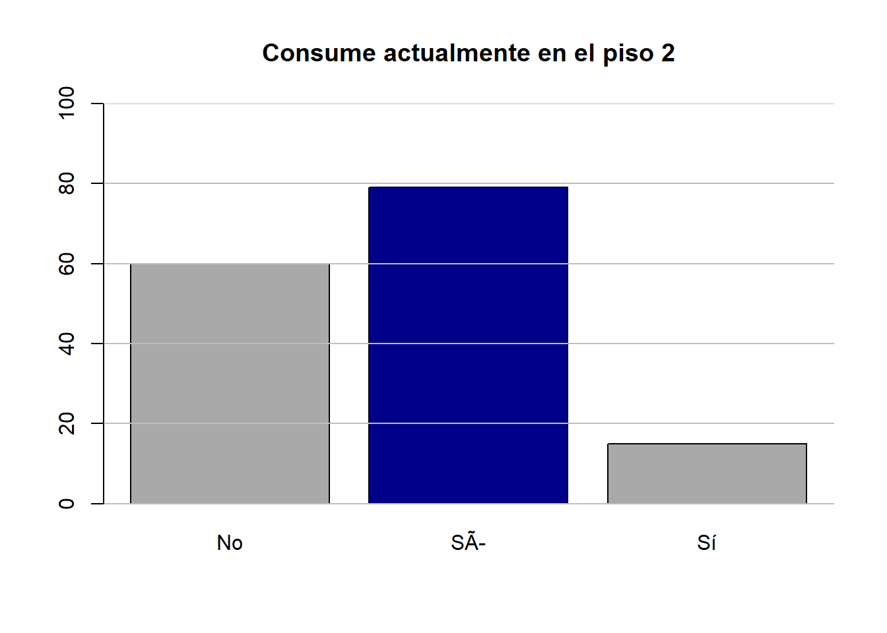
Este gráfico, nos sirve mas que todo para mostrar la diferencia entre la cantidad de personas que si consumen actualmente y las que no, dejando claro que la mayoría de personas que respondió esta encuesta si consumen.
DF %>% filter(consume_actualmente=="No")->barplot2
barplot(table(barplot2$motivo_no_consume_actual),las = 2,cex.names = 0.6,main="Motivos por los cuales no consumen actualmente",ylim = c(0,30))
grid(nx = NA, ny = NULL, lwd = 1, lty = 1, col = "gray")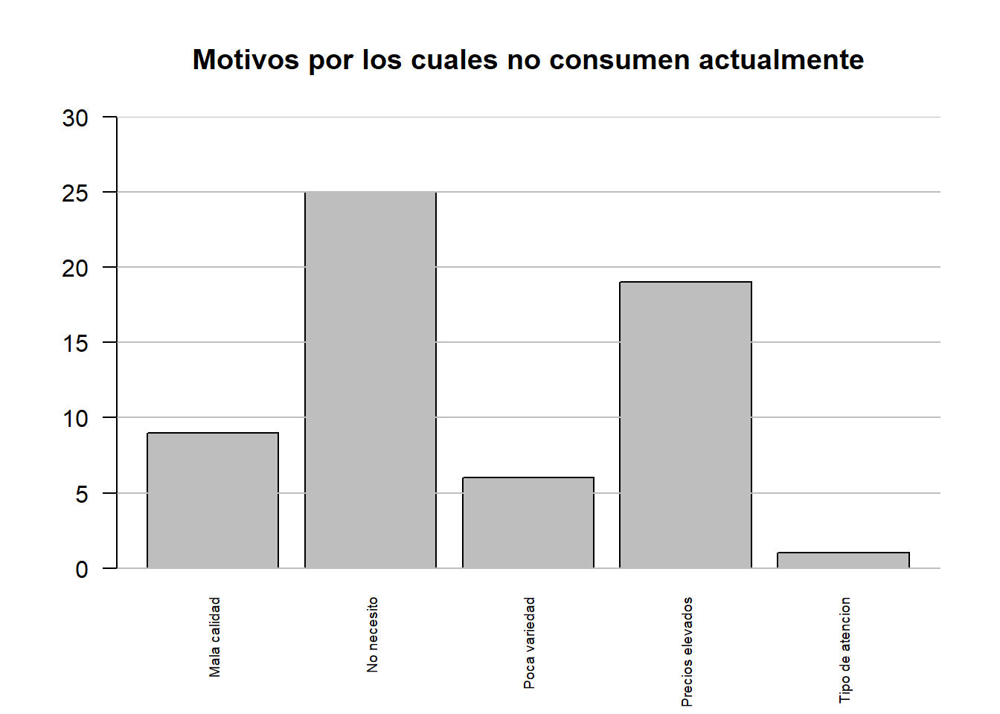
En este gráfico, solo consideramos la gente que no consumen en el piso 2, analizando los motivos por los que no consumen resalta el hecho de que la mayoría no consumen debido a que no necesitan por otra parte también hay una considerable cantidad de gente que considera que los precios son elevados.
DF %>% filter(consume_actualmente=="Sí")->barplot3
barplot(table(barplot3$menu_actual),main="Tabla de frecuencia de los menus consumidos actualmente",ylim = c(0,70))
grid(nx = NA, ny = NULL, lwd = 1, lty = 1, col = "gray")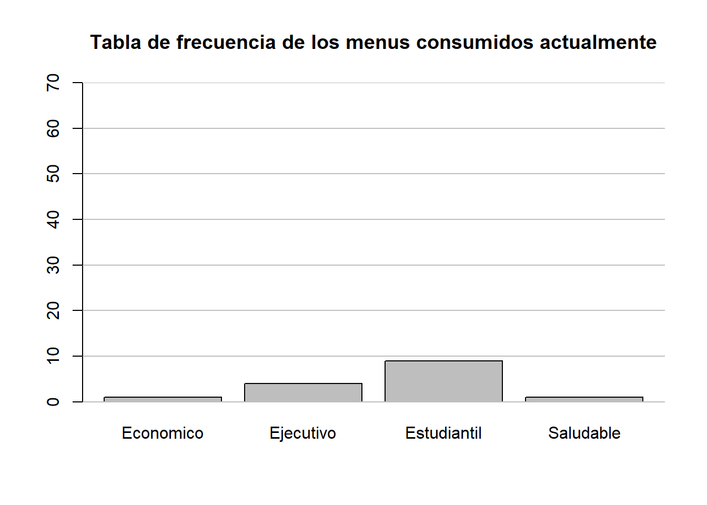
En este gráfico podemos apreciar que dentro de los menús que se ofrecen actualmente, el menú que mas se consume y con diferencia es el menú estudiantil, mientras que el de menor consumo es el saludable. También se aprecia una ligera diferencia entre la frecuencia de consumo del menú económico y el ejecutivo.
summary(DF$tiempo_espera) Min. 1st Qu. Median Mean 3rd Qu. Max. NA's
1.00 7.00 12.00 14.11 20.00 80.00 60 Coeficiente de variación
round(sd(DF$tiempo_espera,na.rm = TRUE)/mean(DF$tiempo_espera, na.rm = TRUE),digits = 2)[1] 0.73boxplot(DF$tiempo_espera, horizontal = TRUE, main = "Tiempo de espera", xlab = "Tiempo (min)", outpch = 25)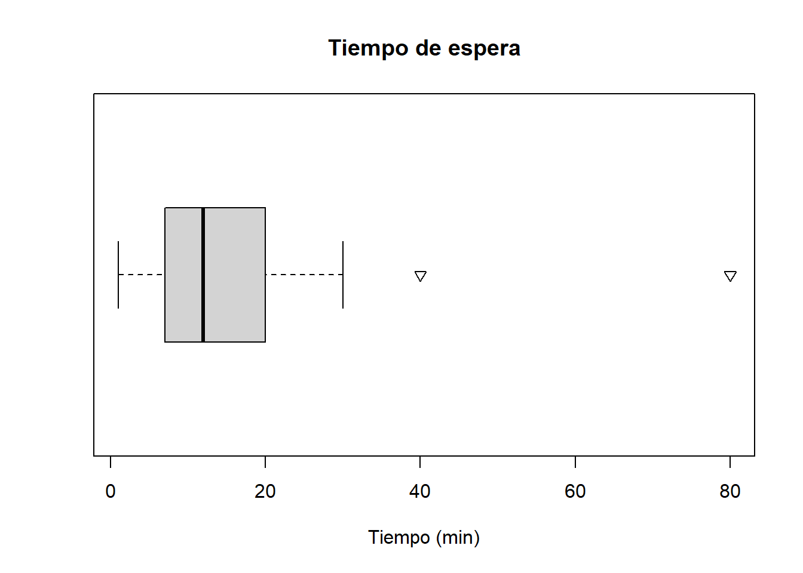
Para esta variable numérica, hacemos uso de los descriptores numéricos para un mejor análisis, como podemos apreciar la mayoría de datos se encuentran entre 7 y 20 min y contamos con solo 2 datos atípicos, ahora nuestro coeficiente de variación es 0.73, por lo tanto no podemos hacer uso de la media debido a que es muy elevado, pero usando la mediana podemos decir que la mitad de los datos se ubica en 12 min.
boxplot(DF$tiempo_disponible, horizontal = TRUE, main = "Tiempo disponible", xlab = "Tiempo (min)", outpch = 25)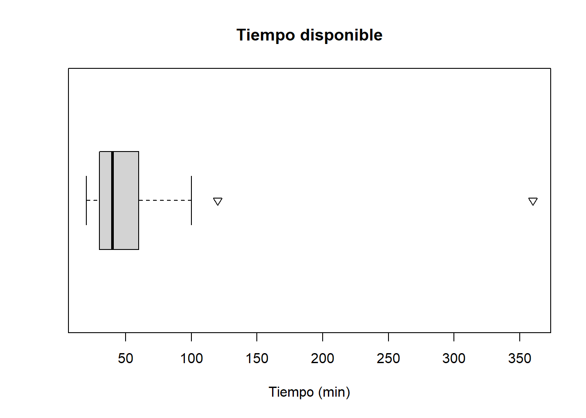
mosaicplot(DF$ciclo ~ DF$consume_actualmente,main="Relacion entre el ciclo y si consume o no en el comedor",color=2:7, )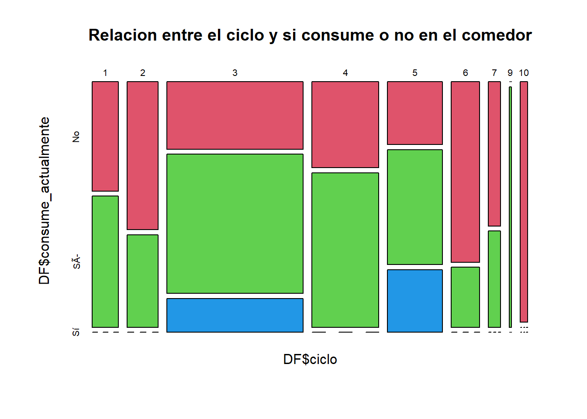
En esta gráfica analizamos la relación entre el ciclo cursado por los estudiantes y si consumen o no en la cafetería. Podemos observar que de la muestra observada, los estudiantes de tercer, cuarto y quinto ciclo son aquellos que acuden más a la cafetería actualmente, e igualmente conforman la mayor parte de la muestra.
DF$menu_previo[DF$menu_previo == ''] <- NA
DF$menu_actual[DF$menu_actual == ''] <- NA
DF %>%filter(consumio_previo=="Si" & consume_actualmente=="Sí") ->barplot4nrow(barplot4)[1] 13barplot(table(barplot4$menu_previo),main="Consumo en ambas consesionarios",cex.names = 0.8, ylim = c(0,70))
grid(nx = NA, ny = NULL, lwd = 1, lty = 1, col = "gray")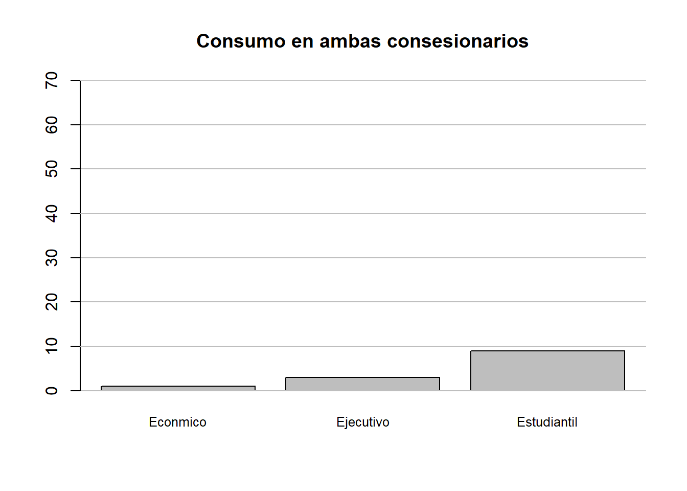
Para elaborar este gráfico se busco seleccionar a las personas que consumían anteriormente y que consumen actualmente, y de igual forma se puede apreciar que el menú mas consumido sigue siendo el estudiantil.
barplot(table(DF$precio_previo),col = "#0DADFC",ylim = c(0,80),beside = TRUE, main = "Consideracion del precio en el comedor")
barplot(table(DF$precio_actual),add = TRUE, col = "darkblue",beside = TRUE)
legend("topright", c("Precio consecionaria anterior", "Precio consecionaria actual"),
lty = 1, col = c("#0DADFC", "darkblue"))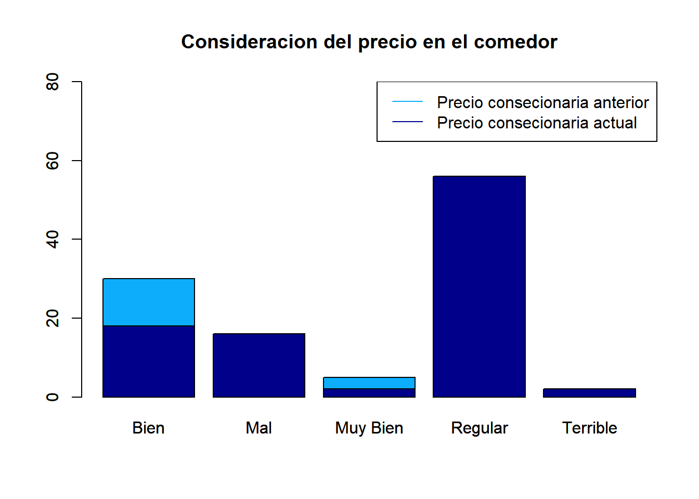
Como podemos apreciar en este gráfico, podemos ver como hay una mayor cantidad de gente que considera que los precios actuales del comedor son malos y terribles, sin embargo también los consideran mas regulares, en cambio el comedor anterior tiene mas valoraciones de bien y muy bien que el actual
cyl_table <- table(DF$consume_actualmente)
gear_table <- table(DF$consumio_previo)
barplot(rbind(cyl_table,gear_table), beside=TRUE,
col=c("royalblue","red"), main="Consumo en los consecionarios",
xlab="Consumo", ylab="Frecuencia")Warning in rbind(cyl_table, gear_table): number of columns of result is not a
multiple of vector length (arg 2)legend(x = "bottomright", legend = c("Actual", "Previo"), fill = c("royalblue", "red"),
title = "Leyenda") 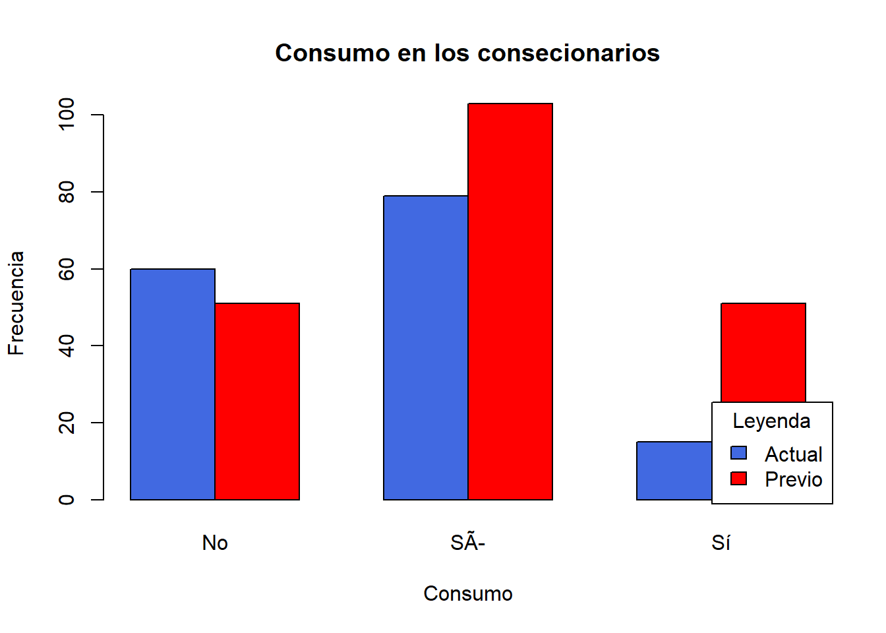
A partir de esta comparación entre la variable consumen actualmente y previo, se obtiene que la proporción de personas encuestadas que consumen ahora es 95 menor que la proporción de personas encuestadas que consumían antes 104 y la proporción de personas encuestadas que no consumen ahora 60 es mayor que la proporción de personas encuestadas que no consumían antes 51. Esto podría ser un indicador de que la nueva concesionaria tiene menos clientes en comparación con la anterior concesionaria resaltando una preferencia mayor de los consumidores del comedor por esta ultima .
summary(DF$tiempo_disponible) Min. 1st Qu. Median Mean 3rd Qu. Max. NA's
20.00 30.00 40.00 46.13 60.00 360.00 61 round(((sd(DF$tiempo_disponible, na.rm=TRUE))/(mean(DF$tiempo_disponible, na.rm = TRUE))),digits = 2)[1] 0.82boxplot(tiempo_disponible ~ ciclo, data=DF, ylab="Tiempo disponible (min)", xlab="Ciclo", main="Relación entre el ciclo y el tiempo disponible para almorzar")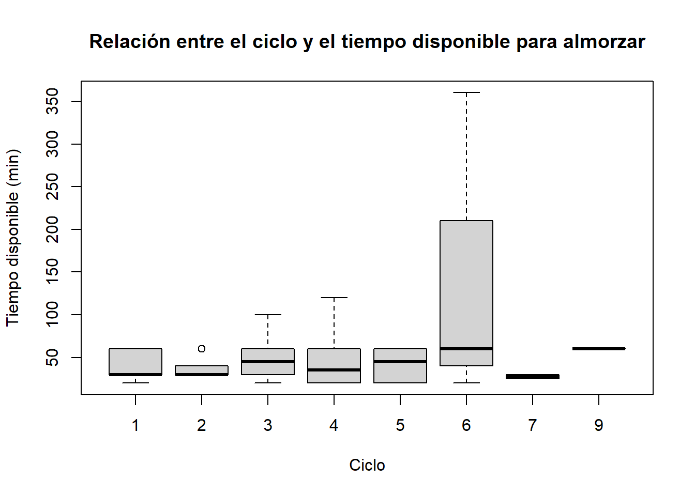
cv_results <- numeric(10)
for (i in 1:10) {
cv_results[i] <- round(sd(DF$tiempo_disponible[DF$ciclo == i], na.rm=TRUE)/mean(DF$tiempo_disponible[DF$ciclo == i], na.rm=TRUE), 2)
}
barplot(cv_results, names.arg = 1:10, xlab = "ciclo", ylab = "Coeficiente de variacion", main = "Coeficiente de variación del tiempo disponible por ciclo")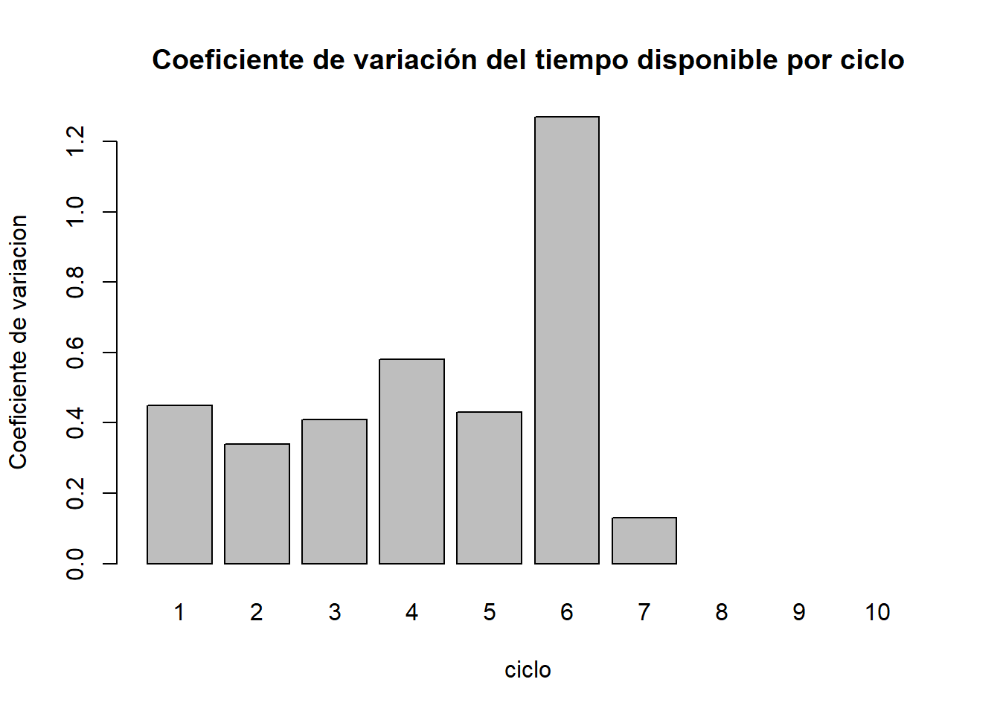
Para analizar la relación entre las variables ciclo y tiempo disponible para almorzar, usamos dos gráficas una de coeficientes de variación de tiempo por ciclo y la otra un gráfico de boxplots, adicionando descriptores numérico. Entonces que se puede concluir con todo esto resulta que no se puede usar la media de la variable de tiempo disponible debido a que el coeficiente de variación es muy elevado por lo tanto podemos ubicar los datos usando la mediana estableciendo la mitad de los datos en 40min, ahora usando el gráfico #, se aprecia que del primer al quinto ciclo no hay mucha variación en los tiempos para almorzar, sin embargo en el sexto ciclo podemos decir que los alumnos cuentan con mayor tiempo por lo tanto hay mayor diferencia entre el tiempo de un alumno y de otro, mientras que en 8vo, 9no, 10mo, y ligeramente los del 7mo ciclo al no contar con una cantidad considerable de datos no podemos concluir nada
Mediante el análisis descriptivo realizado en el desarrollo, obtuvimos varias conclusiones justificables mediante nuestros gráficos. Donde pudimos despejar varias incógnitas como la ¿A que ciclo pertenecen los estudiantes mas recurrentes?,¿Cual es la principal razón por el que no consumen?, ¿Cual es el tiempo de espera?, entre otros. Con los gráficos recopilados podemos ver las debilidades como las fortalezas de la concesionario actual, compararlas con la anterior. Finalmente con el análisis podemos presentar posibles oportunidades de mejora a la administración de UTEC para que la cafetería pueda brindar un optimo servicio.